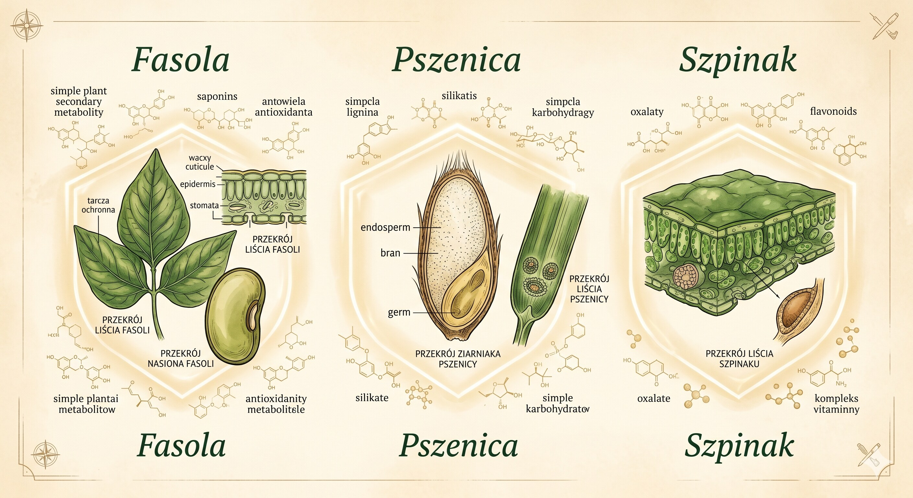
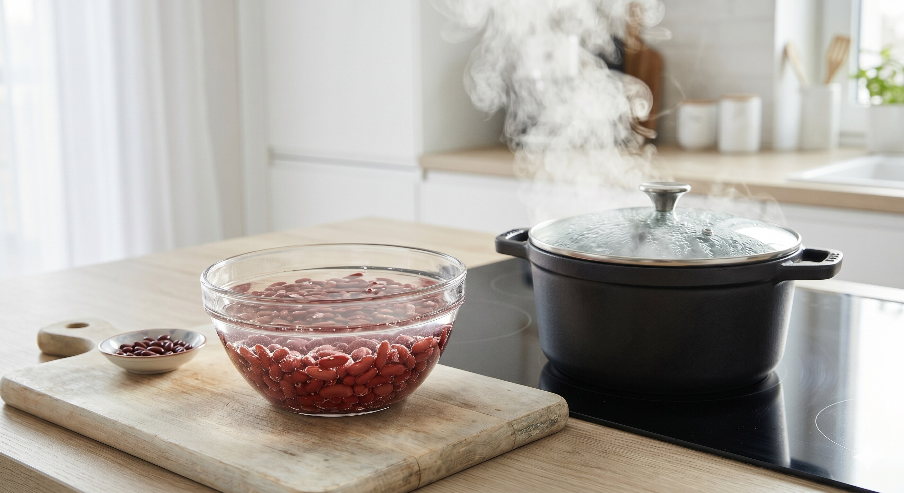
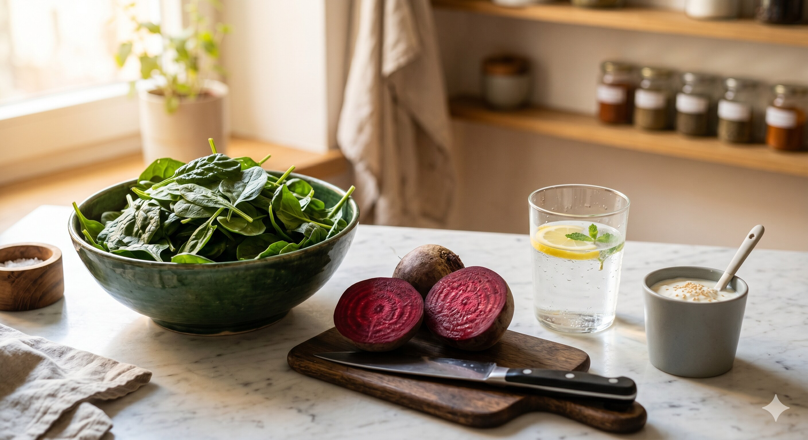
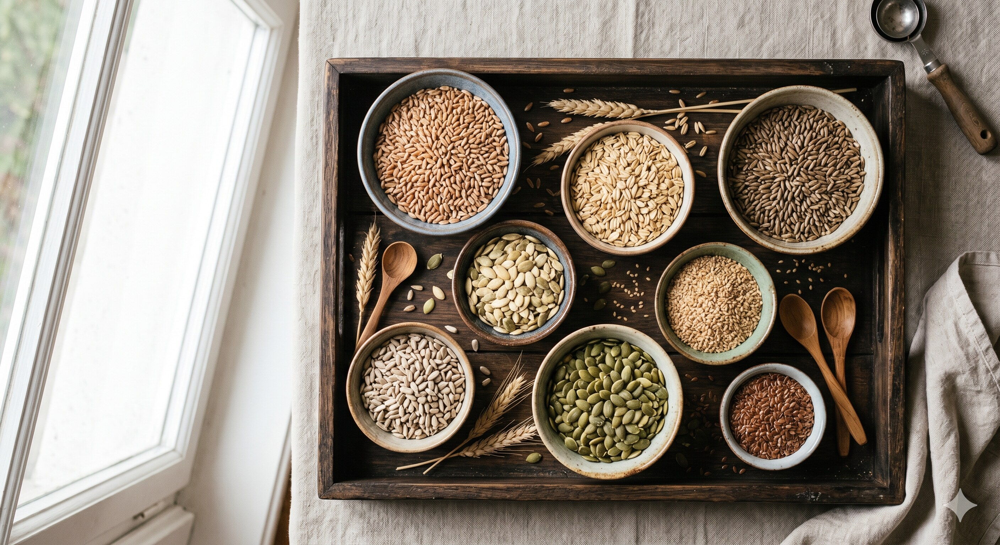
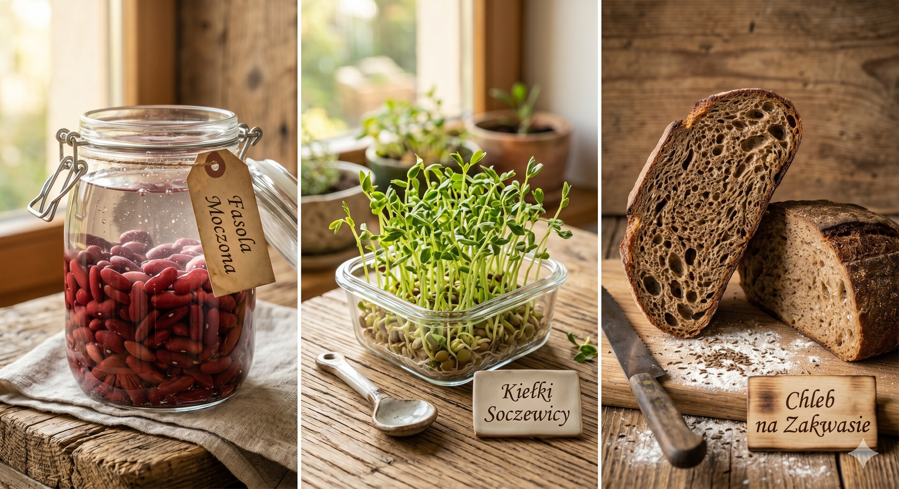

Lektyny, szczawiany i fityniany to naturalne związki chemiczne, które rośliny wytworzyły jako tarczę ochronną przed szkodnikami. W świecie dietetycznych influencerów zyskały one miano „ukrytych trucizn”, które niszczą jelita i kradną minerały. Rzeczywistość naukowa 2026 roku jest jednak znacznie bardziej niuansowa: dla zdecydowanej większości osób po 50-tce te substancje w gotowanej żywności nie stanowią zagrożenia. Co więcej, wiele z nich wykazuje działanie antyoksydacyjne i prebiotyczne. Kluczem do zdrowia nie jest eliminacja cennych strączków czy zbóż, lecz zrozumienie prostych procesów kuchennych, które neutralizują ich negatywne działanie, pozostawiając to, co w roślinach najcenniejsze.
Szybka odpowiedź
Po 50-tce lektyny, szczawiany i fityniany zwykle nie są zagrożeniem, jeśli jesz rośliny po właściwej obróbce. Gotowanie, moczenie i fermentacja znacząco obniżają ich potencjalnie niekorzystne działanie. Zamiast eliminować strączki i pełne ziarna, warto poprawić przygotowanie posiłków i zachować różnorodność diety.
Kluczowe wnioski
- Lektyny ze strączków przestają być problemem po prawidłowym gotowaniu.
- Szczawiany ze szpinaku ograniczysz blanszowaniem i dodatkiem źródła wapnia.
- Fityniany nie są powodem do eliminacji pełnych ziaren przy dobrej kompozycji posiłku.
- Moczenie, kiełkowanie i fermentacja poprawiają strawność diety roślinnej po 50-tce.
Czym są antyodżywcze składniki i po co roślinom ta tarcza?
Składniki antyodżywcze, takie jak lektyny, szczawiany i fityniany, są naturalną tarczą roślin przed owadami i patogenami. U człowieka mogą czasowo ograniczać wchłanianie części minerałów, ale w normalnej diecie zwykle nie są zagrożeniem. Podstawy zdrowego komponowania posiłków opisaliśmy też w dziale Jedzenie.
Współczesna nauka (Nutrients 2020) sugeruje, że termin „antyodżywczy” jest mylący, ponieważ ignoruje korzyści płynące z tych związków. Na przykład fityniany mogą zapobiegać powstawaniu niektórych typów kamieni nerkowych, a lektyny w kontrolowanych dawkach są badane jako potencjalne wsparcie w terapiach przeciwnowotworowych. Po 50-tce, gdy różnorodność diety jest kluczowa dla zdrowia, paniczna ucieczka przed tymi składnikami może doprowadzić do groźnych niedoborów błonnika i polifenoli.
Wniosek praktyczny: Składniki te to ewolucyjna tarcza roślin, nie sabotaż wymierzony w człowieka – w zróżnicowanej diecie ich wpływ jest marginalny lub wręcz korzystny.

Lektyny: czy fasola z puszki naprawdę może nam zaszkodzić?
Lektyny to białka obecne głównie w strączkach. Surowa czerwona fasola może podrażniać przewód pokarmowy, ale gotowanie we wrzątku dezaktywuje problematyczne frakcje. Fasola z puszki jest bezpieczna, bo przeszła pełną obróbkę termiczną. Plan żywienia po 50-tce znajdziesz w dziale Jedzenie.
Wbrew popularnym teoriom o „nieszczelnym jelicie” wywoływanym przez lektyny, brak jest dowodów klinicznych na to, że prawidłowo ugotowane strączki szkodzą zdrowym osobom. Wręcz przeciwnie – populacje spożywające najwięcej fasoli i soczewicy (jak w Niebieskich Strefach) cieszą się najdłuższym życiem w zdrowiu. Kluczem jest jedynie unikanie wolnowarów przy gotowaniu suchych nasion bez uprzedniego doprowadzenia ich do wrzenia, ponieważ zbyt niska temperatura może nie dezaktywować PHA.
Wniosek praktyczny: Gotuj fasolę minimum 10 minut w pełnym wrzeniu lub wybieraj wersje z puszki/słoika – to najprostszy sposób na całkowite bezpieczeństwo.

Szczawiany i nerki: kiedy szpinak staje się wyzwaniem?
Szczawiany występują m.in. w szpinaku, burakach i rabarbarze. Mogą wiązać wapń, dlatego u osób z predyspozycją do kamicy trzeba uważniej dobierać porcje i obróbkę. U większości osób ich obecność w zbilansowanej diecie nie stanowi zagrożenia. Praktykę profilaktyki opisujemy też w dziale Zdrowie.
Aby zminimalizować wchłanianie szczawianów, warto stosować dwie proste techniki: blanszowanie (gotowanie przez 3 minuty i odlanie wody redukuje szczawiany o 30-80%) oraz łączenie produktów wysokoszczawianowych z nabiałem. Wapń z jogurtu czy sera wiąże szczawiany już w świetle jelita, uniemożliwiając im przedostanie się do krwioobiegu i nerek. Dzięki temu możesz cieszyć się folianami i magnezem ze szpinaku bez obaw o kamicę.
Wniosek praktyczny: Jeśli nie masz zdiagnozowanej kamicy szczawianowej, jedz szpinak śmiało, najlepiej krótko blanszowany lub w towarzystwie źródła wapnia.

Fityniany: czy zboża „kradną” minerały z Twojego organizmu?
Fityniany obecne są w pełnych ziarnach, pestkach i orzechach. Mogą ograniczać wchłanianie części żelaza lub cynku, ale zwykle dotyczy to diet mało różnorodnych. Przy dobrze skomponowanym jadłospisie korzyści z pełnego ziarna przeważają, zwłaszcza dla jelit i sytości. Przykłady znajdziesz w artykule Dieta po 50.
Najprostszym „antidotum” na fityniany jest witamina C. Wypicie szklanki soku pomarańczowego lub dodanie papryki do posiłku roślinnego zwiększa wchłanianie żelaza 3-4-krotnie, całkowicie niwelując działanie kwasu fitynowego. Co więcej, fityniany (jako IP6) są badane jako związki zapobiegające zwapnieniu naczyń krwionośnych i tworzeniu się przerzutów nowotworowych, co czyni je fascynującym elementem diety longevity.
Wniosek praktyczny: Wybieraj chleb na zakwasie (fermentacja redukuje fityniany o 50%) i zawsze dbaj o źródło witaminy C przy posiłku z pełnego ziarna.

Moczenie i fermentacja: jak bezpiecznie przygotować rośliny?
Tradycyjne metody przygotowania żywności, takie jak moczenie, kiełkowanie i fermentacja, to najskuteczniejsze sposoby na redukcję antyodżywców. Moczenie fasoli przez 12-24 godziny aktywuje enzymy roślinne, które rozkładają fityniany nawet o 70%. Z kolei fermentacja (np. w chlebie na zakwasie czy kiszonkach) drastycznie obniża poziom szczawianów i lektyn, jednocześnie wzbogacając produkt w cenne probiotyki.
Dla osób po 50-tce te techniki są szczególnie cenne, ponieważ nie tylko neutralizują antyodżywce, ale też znacząco poprawiają strawność produktów roślinnych, redukując problem wzdęć po strączkach. Kiełkowanie nasion soczewicy czy ciecierzycy to kolejny „biohack”, który zwiększa biodostępność witamin z grupy B i minerałów, czyniąc posiłek lżej strawnym i bardziej odżywczym dla dojrzałego układu pokarmowego.
Wniosek praktyczny: Wróć do metod naszych babć – mocz nasiona na noc i wybieraj prawdziwy chleb na zakwasie, by czerpać z roślin maksimum energii bez dyskomfortu.

Kto musi uważać i kiedy dieta eliminacyjna ma sens?
Większość osób może jeść rośliny bez obaw, ale niektórzy pacjenci wymagają personalizacji diety. Dotyczy to m.in. nawracającej kamicy szczawianowej, celiakii i ciężkiej anemii. W takich sytuacjach eliminacje powinny wynikać z diagnozy oraz kontroli wyników, a nie z mody. Jak monitorować parametry, opisujemy w Badaniach po 50.
Dla zdrowej osoby po 50-tce eliminowanie całych grup produktów roślinnych (jak strączki czy orzechy) z obawy przed lektynami jest błędem, który pozbawia organizm kluczowego białka i błonnika. Zamiast eliminacji, stosuj zasadę różnorodności i prawidłowej obróbki. Regularne badania krwi (morfologia, ferrytyna, wapń) raz w roku to najlepszy sposób, aby sprawdzić, czy Twoja dieta faktycznie dostarcza Ci wszystkich niezbędnych minerałów.
Wniosek praktyczny: Jeśli nie masz diagnozy medycznej nakazującej eliminację, jedz rośliny mądrze (gotowane, moczone), bo ich korzyści dla serca i mózgu po 50-tce są bezdyskusyjne.
Najczęściej zadawane pytania
Czy lektyny niszczą jelita?
W przypadku prawidłowo ugotowanej żywności – nie. Gotowanie w 100°C niszczy lektyny, czyniąc je nieszkodliwymi. Strach przed lektynami w gotowanej fasoli nie ma oparcia w dowodach naukowych dotyczących ludzi; jest on promowany głównie przez twórców diet eliminacyjnych.
Czy muszę moczyć fasolę z puszki?
Nie. Fasola w puszce przeszła już proces moczenia i sterylizacji wysoką temperaturą, co całkowicie dezaktywowało lektyny i znaczną część fitynianów. Wystarczy ją przepłukać pod bieżącą wodą, aby usunąć nadmiar soli z zalewy.
Jak najszybciej pozbyć się szczawianów ze szpinaku?
Najskuteczniejszą metodą jest blanszowanie: wrzuć szpinak do wrzątku na 2-3 minuty, a następnie odlej wodę. Ten prosty zabieg usuwa większość rozpuszczalnych szczawianów, zachowując jednocześnie większość wartości odżywczych warzywa.
Czy po 50-tce warto eliminowac straczki i pelne ziarna?
Zwykle nie. U zdrowych osob po 50-tce lepsza jest dobra obrobka (moczenie, gotowanie, fermentacja) niz eliminacja. Straczki i pelne ziarna dostarczaja blonnika, bialka i skladnikow ochronnych dla serca oraz jelit.
Źródła
- Nutrients 2020: Anti-nutrients and health effects
- Nutrients 2020: Plant anti-nutrients review (PMC)
- Nutrients 2019: Lectins in legumes and processing
- Harvard T.H. Chan: Lectins and anti-nutrients
- NIH ODS: Calcium Fact Sheet for Health Professionals
- NIH ODS: Iron Fact Sheet for Health Professionals
Uwaga: Artykuł ma charakter informacyjny i edukacyjny. Nie zastępuje konsultacji lekarskiej, diagnozy ani leczenia.